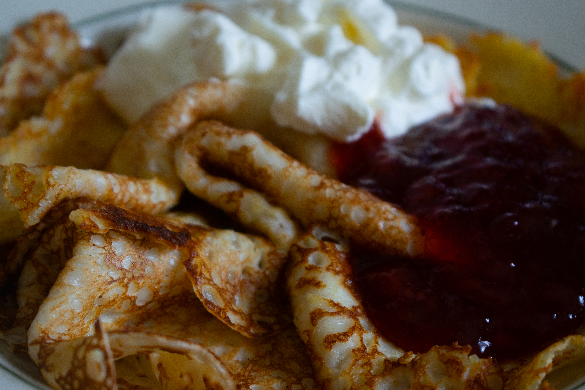

LUNCH
Dagens lunch hittar du hos oss varje dag, från måndag till lördag, Allt från soppluncher,
sallader,
mackor; och på fredagar bjuder vi alltid på pannkakstårta för det små (och äldre såklart!).
Varje dag mellan 11.00-13.00

FIKA BUFFE
Frossa i vår omtalade fika-buffé; kakor, bakelser, tårtor, bullar, kaffe, thé, jordgubbssaft,
jaa,
allt
du kan tänka dig och lite därtill!
Fredag: 13.00-16.00
Lördag: 13.00- 15.00

HEMBAKAT
Mjöl på köksbänken, smör som smälter och doften av nygräddat som letar sig genom huset – enkla,
älskade klassiker som smakar allra bäst till en kopp kaffe och en stunds ro.
Hos oss lever de små stunderna kvar.